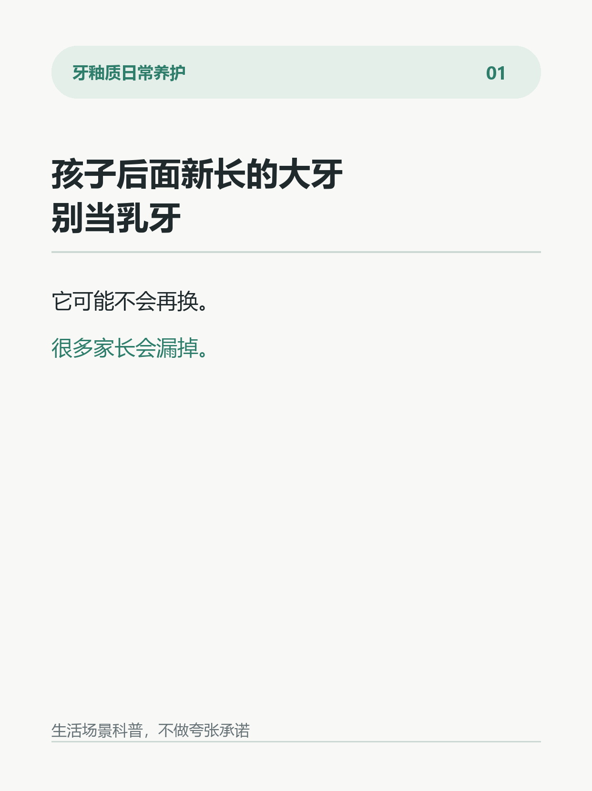
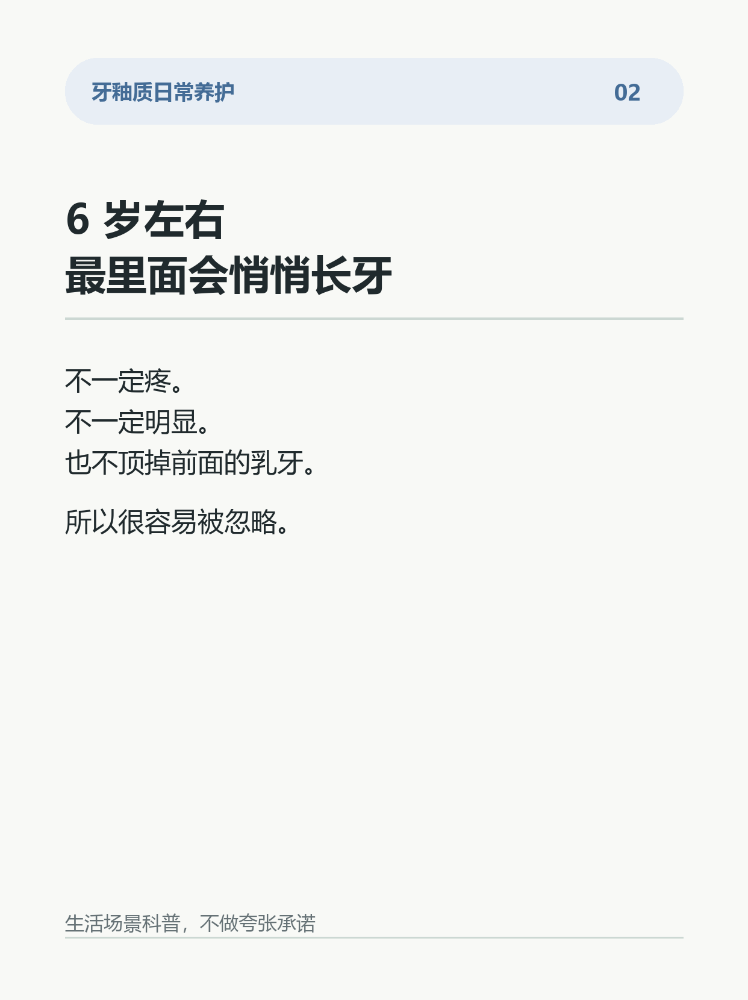
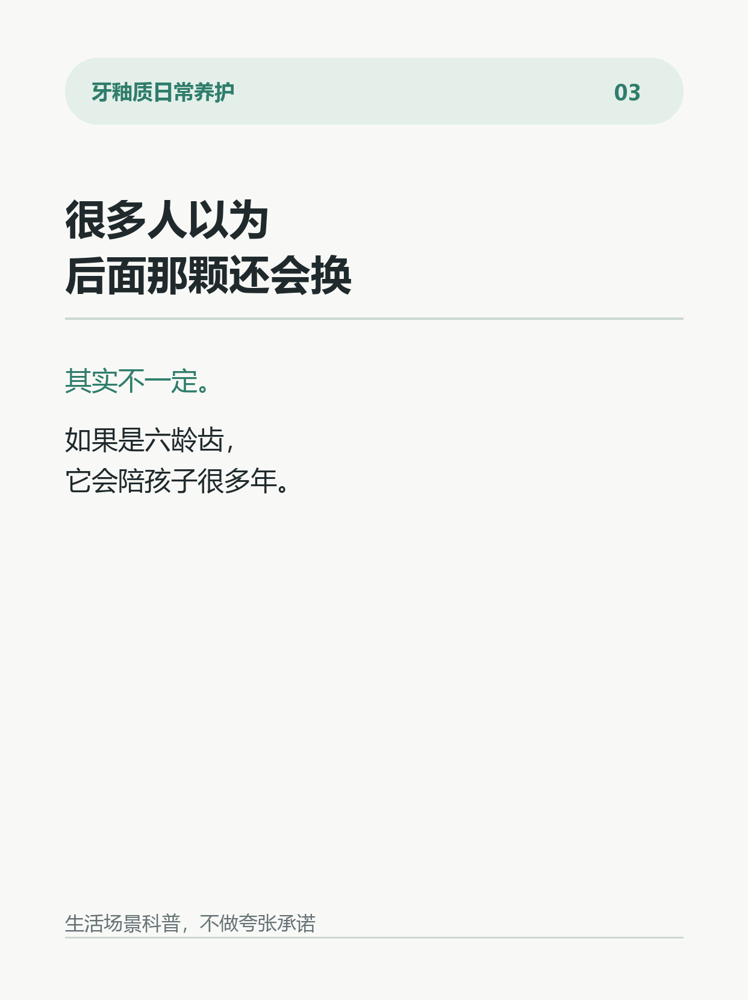
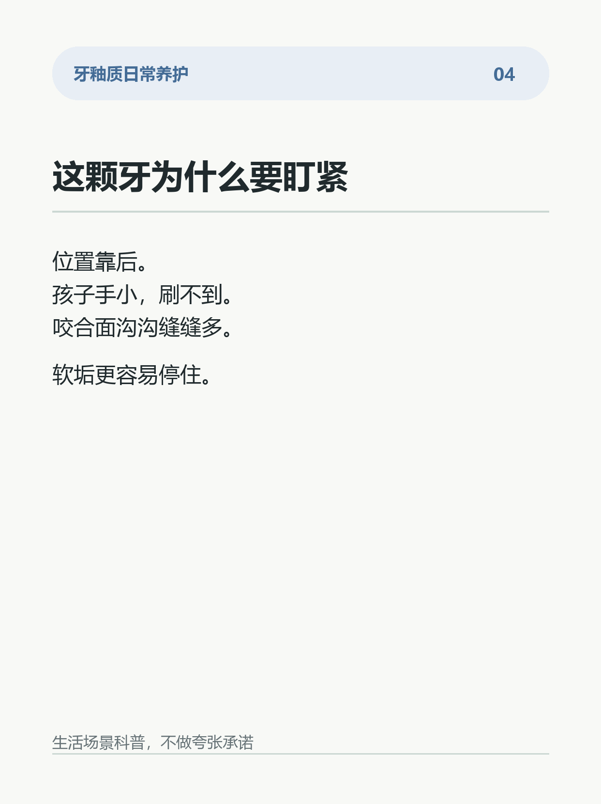
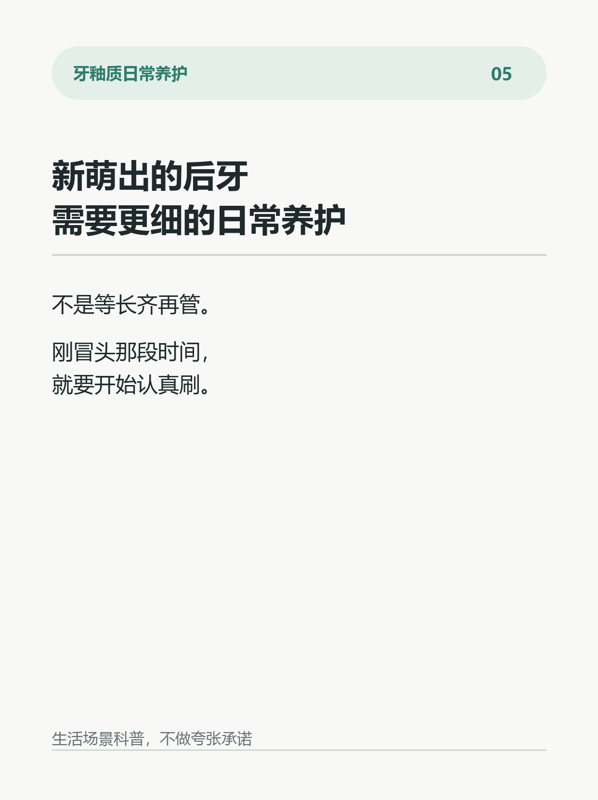
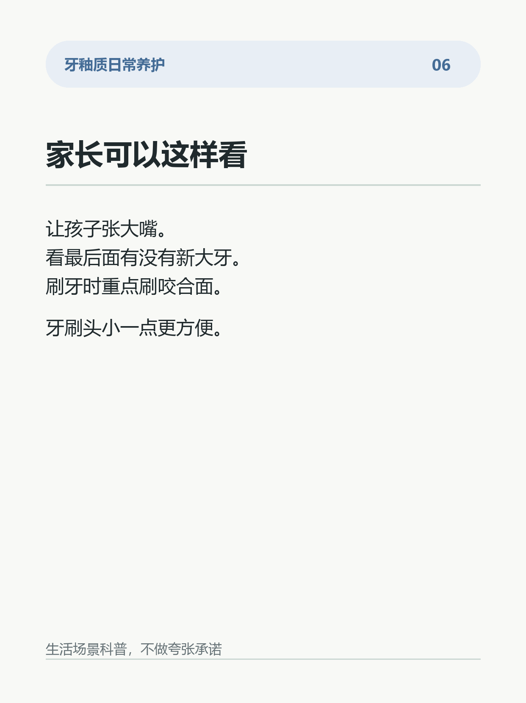
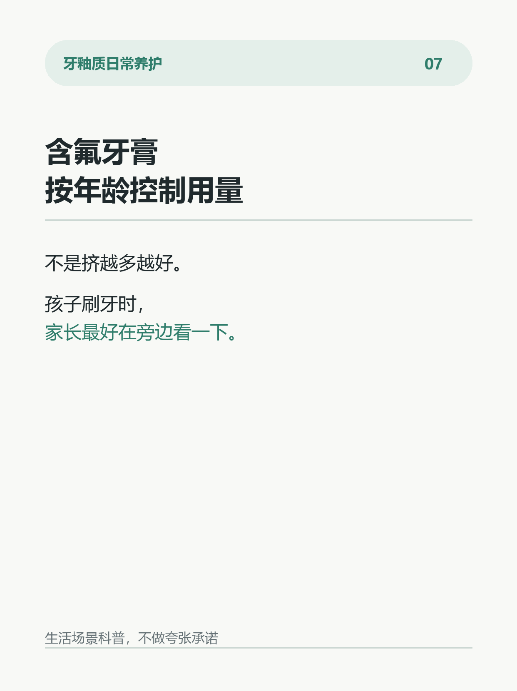
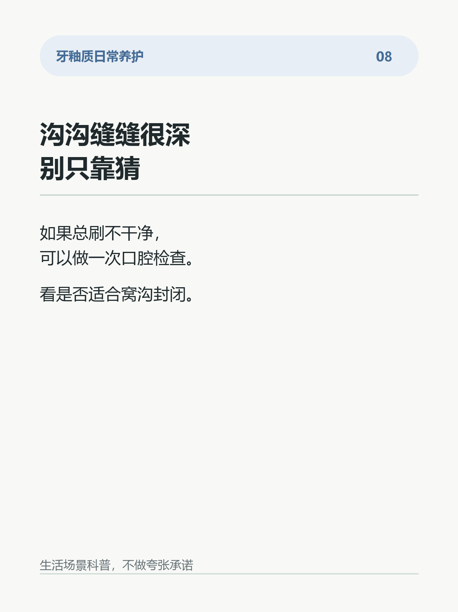

孩子后面新长的大牙，别当乳牙
很多家长会漏掉一件事：
孩子 6 岁左右，最里面会悄悄长出一颗新大牙。
它不是换下来的乳牙。
它通常是第一恒磨牙，也就是常说的“六龄齿”。
问题是，这颗牙长得很低调。
它不顶掉前面的乳牙，家长不一定会发现。
孩子自己也常常刷不到后面。
再加上大牙表面有很多沟沟缝缝，食物和软垢更容易停住。
所以它刚长出来那几年，特别值得盯一下。
很多人以为：
后面那颗反正还会换。
其实不一定。
如果是六龄齿，它要陪孩子很多年。
更稳的做法：
1. 6 岁前后，家长帮孩子看看最后面有没有新大牙。
2. 刷牙时重点照顾后牙咬合面。
3. 牙刷头可以小一点，方便伸到后面。
4. 含氟牙膏按年龄控制用量。
5. 窝沟很深、总刷不干净，可以做一次口腔检查，了解是否适合窝沟封闭。
这不是制造焦虑。
只是提醒：有些牙不是“换牙后再管”，而是刚冒头就要开始认真养护。
你家孩子的六龄齿长出来了吗？
#牙釉质 #儿童护牙 #六龄齿 #换牙期 #护牙日常 #含氟牙膏 #刷牙习惯 #窝沟封闭







